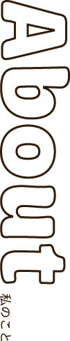

松元 ゆい
沖縄県出身の22歳です。
趣味はアクション系のアニメとドラマを観ることです。
大学2年生の時、食育のプロジェクトに参加した際にメンバーと
コミュニケーションを取る中で得られた傾聴力と父親譲りの探究心を活かし、
ワクワクを届けられるデザインを作っていきたいです。
傾聴力
大学在学中に参加したプロジェクト内でプロジェクトマネージャーを経験しました。メンバーとコミュニケーションを取る上で、相手の話を最後まで聞き、要望や課題をできるだけ正確に理解することに注力しました。その結果、プロジェクトのリーダーを任せていただけたり、周囲から「話しやすい」との声をいただけるようになりました。
探究心
幼い頃から探究心が強く、「知る」ことに意欲的です。興味の範囲は様々ですが、理解を深めスキルを習得するためにスクールに通ったり、プロジェクトに参加するなど、「知る」ために様々な挑戦をしてきました。デザインに対しても同様で、幅広い知識やスキル、表現を追求し挑戦することができます。
責任感
やると決めたことは最後までやり遂げます。大学在学中に参加した、小学校低学年の児童向けのカードゲームを制作するプロジェクトでプロジェクトリーダーを任せていただきました。プロジェクトに参加すること自体初めてだったことと、短期間でトライアルまで持っていかなければいけなかったので大変でしたが、最終的にプロジェクトの目的を達成することができました。